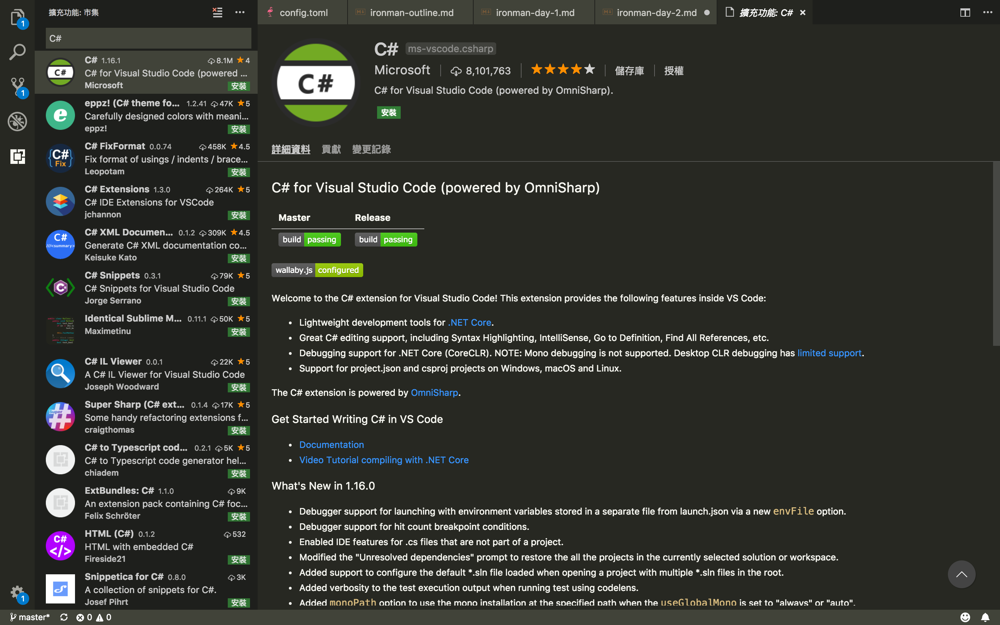

[鐵人賽Day2] 架設SignalR環境
文章目錄
今天來先來裝需要的環境
需要的OS環境
OS環境Windows、Linux、Mac OS任一都行，主要操作是用dotNet CLI和VS Code不用擔心會有不一樣的操作流程，如果你使用Visual Studio使用UI操作也是可以，但是這邊還是讓大家學學dotNet CLI和VS Code怎麼用比較好，畢竟是3個環境都能統一用的方法，學一下對自己沒壞處。
安裝.Net Core SDK
SDK下載 打開後一直下一步安裝就行了 裝完後打開終端機輸入，看看有沒有顯示版本，有代表安裝成功
$ dotnet --version
Visual Studio Code 安裝
VS Code安裝包
一樣一直下一步
然後VS Code的CLI建議也裝一下
Ｗindows安裝時會詢問
Mac OS用裝完後Command + Shift + P然後輸入shell Command會有Path中安裝’Code’指令
然後Linux安裝方法有點不一樣
參考官網教學
C#套件安裝
VS Code還要安裝一下微軟的C#的套件，裝完之後重開VS Code會發現他在裝Debug套件，這樣就能使用Debug模式了。

NPM套件管理工具
Node.js安裝包一樣一直下一步就行。 裝完後一樣打開終端機檢查
$ npm -v
常用的dotnet CLI
講幾個常用的指令
dotnet new可以建立專案，type為專案種類，-o為要不要建立資料夾，沒打則會在當前位置建立專案，projectname不用說是專案名
$ dotnet new <type> -o <projectname>
註: 輸入dotnet new –help可以看到所以的專案種類
dotnet run就是執行專案，如果你有學過.NET Core 1.X的指令的話，應該還會知道一個dotnet restore還原套件，這個在2.x版已經沒了，dotnet run會幫你檢查是否有還原過，不過之後我們會在VS Code使用中斷點，這時候就要改用VS Code的Debug模式，所以之後可能也不會常用。
$ dotnet run
dotnet add package會使用Nuget安裝套件，跟.NET不太一樣的地方是他並不會裝進你的專案，所以如果是以前要裝Bootstrap這種前端套件的話，請改用NPM或是微軟新的libman。
$ dotnet add package <packagename>
無聊的安裝環境終於結束了，下一篇就要開始玩SignalR了，會先來個基本的範例。